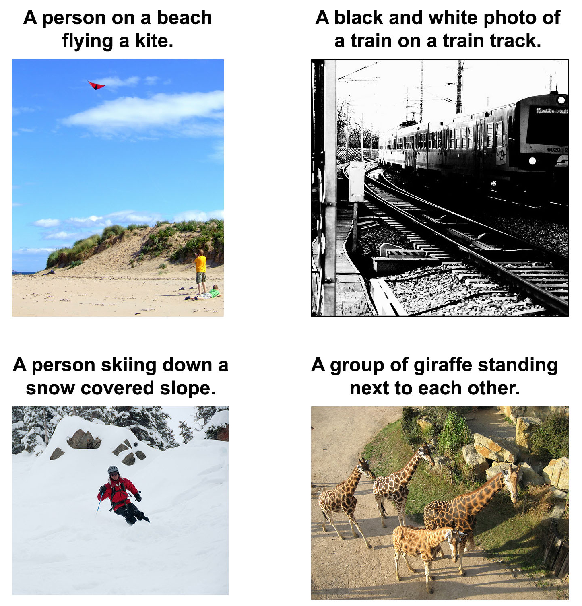
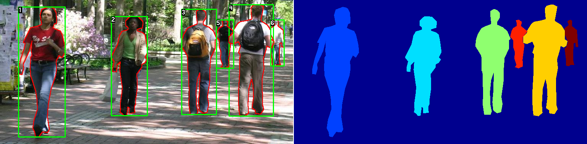
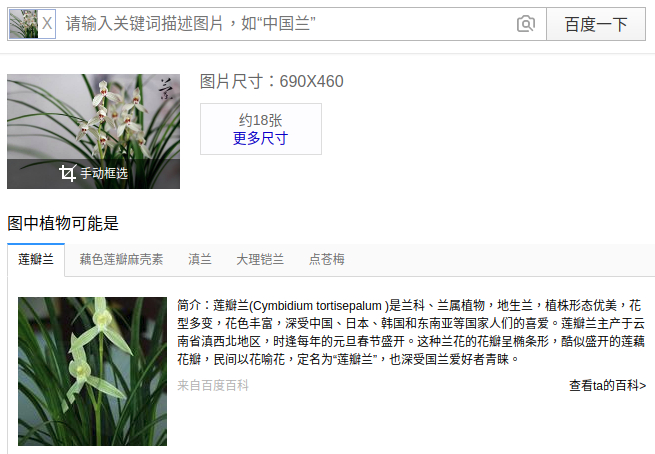
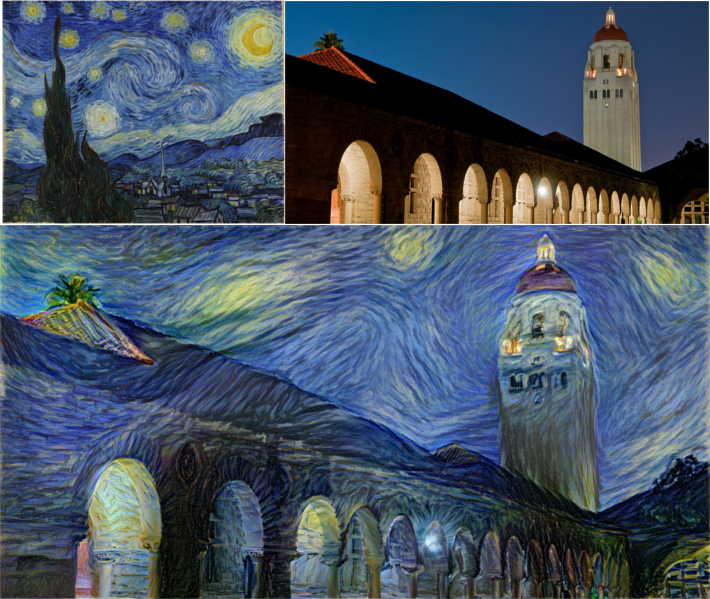
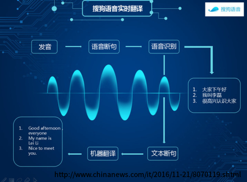
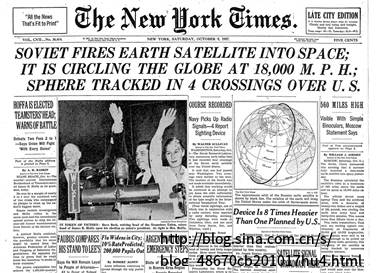
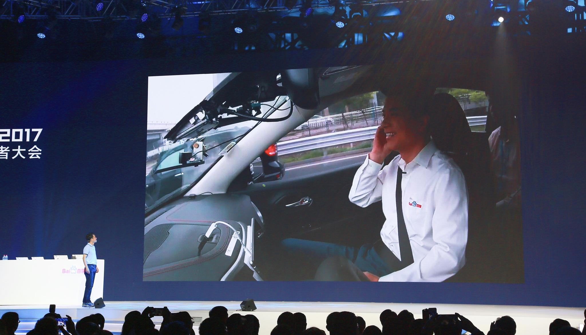

深度學習入門之一些應用場景
 deep learning
deep learning
在2006年，深度學習的概念由 Geoffrey E. Hinton 等人提出。到2012年，隨着GPU的發展，深度學習開始在各個領域爆發，並影響至今。 深度學習是機器學習的一個領域，而機器學習是人工智能（AI）的一個領域。
圖像分類識別（手寫識別） http://yann.lecun.com/exdb/lenet/index.html

圖像內容描述（盲人識圖） https://github.com/tensorflow/models/tree/master/research/im2txt
圖像目標檢測（行人檢測） http://www.cis.upenn.edu/~jshi/ped_html/
圖像检索匹配（商品搜索，人臉識別）
圖像修復增強（灰色變彩色，消除馬賽克） https://github.com/richzhang/colorization

圖像風格遷移（梵高風格畫作） https://github.com/jcjohnson/neural-style
語音實時識別（語音輸入法）
語音實時翻譯（實時字幕）
語義歸納（生成文本標題，摘要） https://github.com/abisee/pointer-generator
生物特徵識別（指紋識別，人臉支付，安檢）
疾病協助診斷（腫瘤檢測）

Chatbot（智能助手）
AlphaGO（DeepMind公司）
自動駕駛（無人車）
